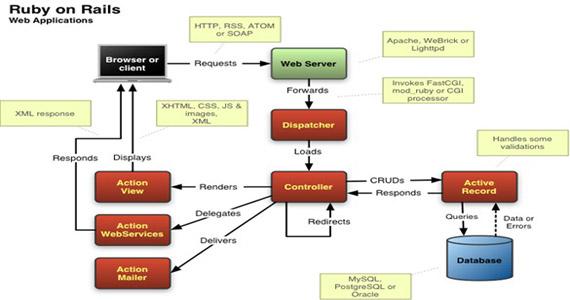

- 打杂，见习
- ExtJS 1.x, jQuery 1.0?, Ruby on Rails, Flex 2
- ERP库存管理、电子说明书平台
Created by @dongjinhu
2007年
15分钟开发一个Blog ???
.Net?
SSH?
PHP?
Nothing Impossible!

我的开发方式
Web相关(JavaScript)
1. 分析需求
2. 开发功能
3. 测试
4. 上线
5. 补文档...
1. 拿到日方需求，分配任务
2. 大家分析需求，估算时间
3. 反馈给日方
4. 日方同意准备开发，不同意重复2，3
5. 开发过程中对需求提QA
5. 如果是文档问题, OMG! 漫长的等待...
6. 开发完成后MT、CT、PT
7. Track系统跟踪问题，修改Bug,重复6,7
NO...
你就是一个累码的
有General Guideline
有文档
有技术限制范围
有规定的开发流程
你的想法要得到日方的肯定后才能使用
技术更新缓慢
无法运用好的实践
开发产生思维定势
买书...
看视频， 看博客
运用所学知识做一些Demo
总结一些我的实践方式...
Comming soon...
使用CDN加速静态资源下载
如果有时CDN上资源下载不下来，需要下载自己服务器上的资源
自定义:
function PerfTest(implement, params, times) {
this.implement = implement;
this.params = params;
this.times = times || 10000;
this.average = 0;
}
PerfTest.prototype = {
run: function(){
var beginAt, endAt, sumTime = 0;
for(var i = 0, times = this.times; i < times; i++) {
beginAt = +new Date();
this.implement(this.params); //调用测试函数
endAt = +new Date();
sumTime += endAt - beginAt;
}
this.average = sumTime / this.times;
return console.log("Average executated " + this.times + " times and time is : " + this.average );
}
}
var list = [1,2,3,4,5,6,7,8,9,10];
var testFunc = function(list){
var arr = [];
for(var i = 0; i < list.length; i++) {
arr.push(list[i]);
}
}
var test = new PerfTest(testFunc, list);
//var test = new PerfTest(testFunc, list, 100000); //指定执行次数
test.run();
可以集中修改配置文件，而不需要每个文件都修改
var SN = SN || {};
SN.Config = {
//Common message
messages: {
greeting: 'Hello World!'
},
//Error message
errors: {
mobile: {
blank: '电话号码不能为空',
invalid: '电话格式不正确'
}
}
}
$('#mobile').tooltip(SN.Config.errors.mobile.blank);
使用Maintainable JavaScript书中提到的动态创建命名空间
JavaScript
CSS
不要创建全局变量，使用模块模式
/**
* The Mobile Common Object
* @class Common
* @static
*/
var SN = SN || {};
SN.Common = (function(){
'use strict';
var _getUrlParams = function(ulr){
//...
}
//...
return {
/**
* Get the URL params
* @params {string} url request url
* @returns {Array} url params array
* @method _getUrlParams
*/
getUrlParams: function(url){_getUrlParams(url);}
}
})();
//调用
SN.Common.getUrlParams('xxxx');
注意在立即执行函数内部定义变量不能丢了var
好处是隐藏内部实现，只暴露公共接口
我的JavaScript编码实践...
每条执行语句不要忘记添加分好(Semicolon)
function test() {
return //javascript 编译器认为语句结束，直接返回
{
name: 'foobar'
};
}
function test() {
return {
name: 'foobar'
};
}
如果你不确定变量值域的话，比较时，使用===
'1' == 1 // true
'' == 0 // true
false == '0' // true
' \t\r\n ' == 0 // true
'1' === 1 // false
'' === 0 // false
false === '0' // false
' \t\r\n ' === 0 // false
慎用内建包装类型创建对象
var num = new Number(8);
var str = new String('foobar');
console.log(typeof num); //object
console.log(typeof str); //object
//num和str的valueOf返回的是object,如果此时用这种方式比较，就会出问题
var str2 = 'foobar';
str2.replace('foobar', 'hello, world') // str2先转化为内建包装对象
如果只打算访问自有属性，而不是原型链上的,那么...
for (var prop in obj) {
if (d.hasOwnProperty(prop)) {
console.log( prop + ": " + obj[prop] );
}
}
万恶之源? with & eval ?
var obj = { name: "foobar"},
name = "helloworld";
with (obj) {
console.log(name); // 如果变量和对象属性同名，使用变量 => helloworld
occupation = "IT"; // 对象无法带着这个属性出去，但是它自己可以出去
}
console.log(obj.occupation); // undefined;
console.log(occupation); // IT
eval('console.log("Hello, World")'); //可以执行javascrtip文本
其他解决方案不行时，可以考虑一下救命稻草。Twitter? xxx? 有为with, eval做过辩护...
parseInt带上进制
parseInt("10"); // 10
parseInt("010"); // 8， 发现0开头，认为要转成8进制
parseInt(val, 10);
高效迭代访问
var arr = [1,2,3,4,5,6,7,8,9,10],
len = arr.length,
index = len;
while(index--) { // 0为false, 不要比较，这样效率会更好一些
console.log(arr[index]);
}
用户自定义方法名称以动词开头
function _name(person) {
//...
}
//set ? -> get ? -> modify? -> delete? -> ...
function _getName(person) {
//...
}
避免在闭包内部引入闭包外部的变量，当闭包执行完成后，对象无法被GC回收
var a = function() {
var numArr = [1,2,3];
return function() {
return numArr;
};
}();
三目运算符
var authorized = false,
active;
if(authorized) {
active = true;
} else {
active = false;
}
=>
var active = authorized ? true : false;
延伸
//执行函数
authorized ? function(){
console.log('user is active...');
}()
: function(){
console.log('user is not active...');
}();
//多个表达式
var a,b;
authorized ? (a = 1, b = 2) : (a = b = 0);
//嵌套
var c;
authorized ? (a = 1, b = 2) : authorized ? c = 3 : c = 0;
短路运算符
var class = {
_addMember: function(member){
this.members = this.members ? this.members : [];
this.members.push(member);
}
};
=>
var class = {
_addMember: function(member){
this.members = this.members || [];
this.members.push(member);
}
};
switch语句使用
function findKindVal(kind){
if(kind == 'a') {
return 0;
} else if(kind == 'b') {
return 1;
} else if(kind == 'c') {
return 2;
}...
}
=>
function findKindVal(kind) {
switch(kind) {
case 'a':
return 0;
case 'b':
return 1;
case 'c':
return 2;
case 'd':
case 'e':
return 3;
default:
return '-1';
}
}
使用createDocumentFragment添加DOM
var list = document.getElementById('book_list');
for(var i = 0; i < 10; i++) {
var element = document.createElement('li');
element.appendChild(document.createTextNode('book_' + i));
list.appendChild(element);
}
=>
var list = document.getElementById('book_list'),
fragment = document.createDocumentFragment(),
element;
for(var i = 0; i < 10; i++) {
element = document.createElement('li');
element.appendChild(document.createTextNode('book_' + i));
fragment.appendChild(element);
}
list.appendChild(fragment);
减少var定义变量
var a = 1;
var b = 2;
var foo = 'bar';
=>
var a = 1,
b = 2,
foo = 'bar';
在循环外定义变量
for(var i = 0; i < 10; i++) {
var element = document.createElement('li');
}
=>
var element;
for(var i = 0; i < 10; i++) {
element = document.createElement('li');
}
使用join方法链接字符
var strs = ['a', 'b', 'c'],
len = strs.length,
result = '';
for(var i = 0; i < len; i++) {
result += strs[i];
}
=>
var result = strs.join('');
It is about code, not about coder.
平时多积累
学习好的实践
写Demo
Review 自己代码
不断学习新事物,并实践
- http://bonsaiden.github.io/JavaScript-Garden/zh/
- https://github.com/sorrycc/awesome-javascript
- https://github.com/wwsun/awesome-javascript
- https://github.com/wchaowu/javascript-code
- https://hacks.mozilla.org/articles/
- https://developer.mozilla.org/en-US/docs/Web/JavaScript
- http://javascriptweekly.com
- http://css-weekly.com/
- https://speakerdeck.com/addyosmani/javascript-memory-management-masterclass
- https://github.com/addyosmani/es6-equivalents-in-es5
//...
Q&A
i.toString() // '' + i
var obj = {
a: xxx,
b: xxx
};
List.push(obj); //obj只用到一次
if (!list || (list && !list.length)) {
//=>
if (!list || !list.length) { //不存在或者存在但是为空
if (level == 0) {
=>
if (!level) {
(new Date()).getTime()
=>
+new Date()
if (!checkbox.checked) {
checkbox.checked = true;
} else {
checkbox.checked = false;
}
=>
checkbox.checked = (!checkbox.checked) ? true : false;
if (selectedValue) {
$input.val(selectedValue);
} else {
$input.val("");
}
=>
$input.val(selectedValue || "");
inputs.length && inputs.forEach(function (input) {
=>
inputs.forEach(function (input) {
course.showTips("请输入正确的手机号！");
SNError.PHONE_FORMATTER
!(function(global){
var SNError = {
PHONE_FORMATTER: '请输入正确的手机号！'
}
global.SNError = SNError;
})(this);
//后面只需要维护这个SNError即可，同时也会减少js文件的大小
//实例化后每个对象占用内存会随着方法而线性扩展
(function(){
function A () {
this.name = 'foobar';
this.greeting = function(){
console.log(this.name)
}
}
var a = new A();
a.greeting();
console.log(a.hasOwnProperty('greeting'))
})();
var _this = this;
var db = this.getSessionStorage();
var _activeCode = URL_PARAM["xxx"];
=>
var _this = this,
db = this.getSessionStorage(),
_activeCode = URL_PARAM["xxx"];
me.removeClass("focus");
me.addClass("gray");
=> me.removeClass("xxxx").addClass("xxx")
//除完后如果是小数？
parseInt((len - maxlimit + 1) / 2)
=>
parseInt((len - maxlimit + 1) / 2, 10)
location.href = "./error.html?errorMsg=" + xxx.SYSTEM_ERROR_MSG();
=>
location.href = "./error.html?errorMsg=" + encodeURIComponent(xxx.SYSTEM_ERROR_MSG());
$("#xxx").find(".xxx").length || 0
=》
$("#xxx").find(".xxx").length
//变量表达式重复使用到，没有缓存到变量中。
xxx.getXXXX();
=>
var state = xxx.getXXXX();
window.moduleName.moduleMethod
=>
moduleName.moduleMethod
$obj.css("visibility","hidden");
=>
$obj.show();
//条件会互斥的话，只会走一个分支
if(_variableName == "xxxxx"){
//...
}
if(_variableName == "xxxxx"){
//...
}
=> if ... else if ... 或者switch (条件多的话，优先考虑)
obj["a"] = a;
obj["b"] = b;
obj["c"] = c;
obj["c"]= d;
=>
obj = $.extend(obj, {
a: xxxx
//...
if(....) {
str = '计算获取'
return str
}else {
return '';
}
=>
var str = '';
if(....) {
str = '计算获取'
return str;
}
//字面量声明
var arr = new Array();
=>
var arr = [];
$("#xxxx").unbind("click");
$("#xxxx").click(function(){
//...
});
=>
$("#xxxx").unbind("click").bind('click',function() {
//...
});
More...